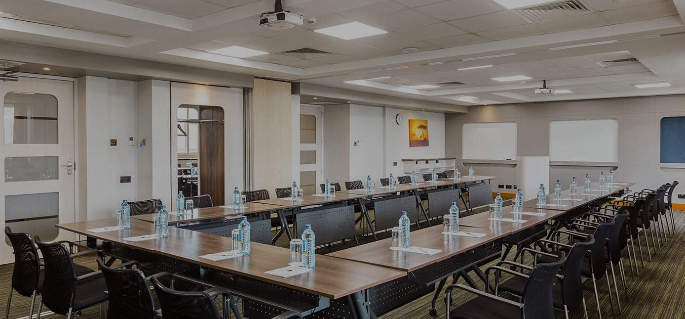
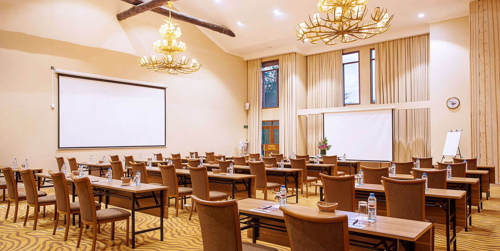
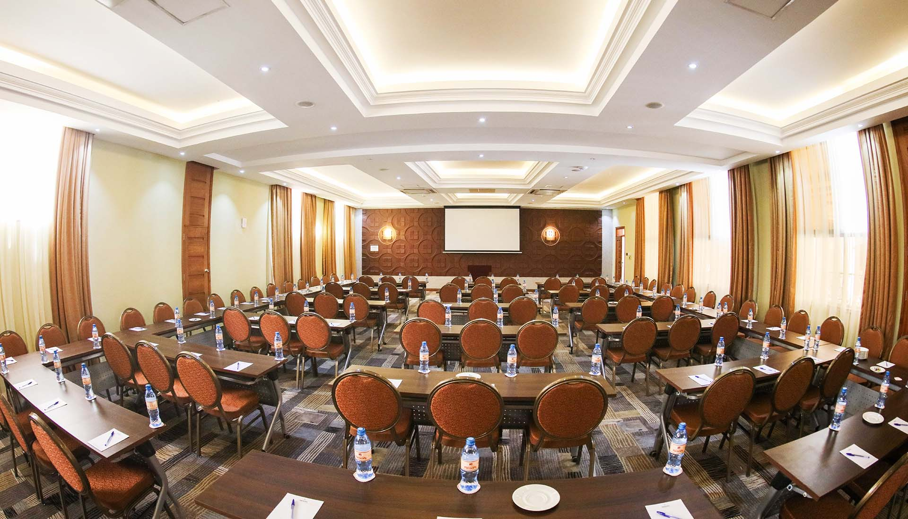
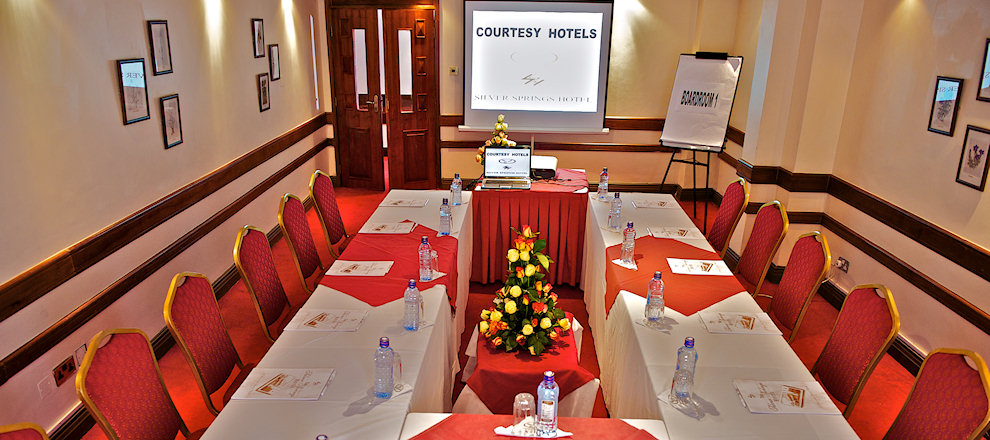

Plan your next meeting, conference or event in any of our prime properties across the
bustling city of Nairobi, along the white sandy beaches of Mombasa or in the Wild on
Safari. From large scale conference banquets to dynamic product launches and from
presidential events catering to 5000 guests to a private chefs table for 6, we continue
to conceptualise and deliver unique culinary experiences that are a hallmark of Four Seasons
Hotel & Resorts.
You say the word and we make it happen!
You can now earn Four Seasons Corporate Zawadi Points everytime you book a meeting or an
event at any of our hotels these points are then redeemable for a holiday at any of
our hotels.

Hall Jubilee Has the best board meeting facilities in Nairobi which fosters collaboration and networking with |

Woody AfIs a grandiose modern conference space with magnetic views of the park and the city, |

Conventional Centre The convention centre has a quintessential ballroom and a grandiose banquet hall that allows |
|

From large scale conference banquets to dynamic product launches and from presidential events catering |